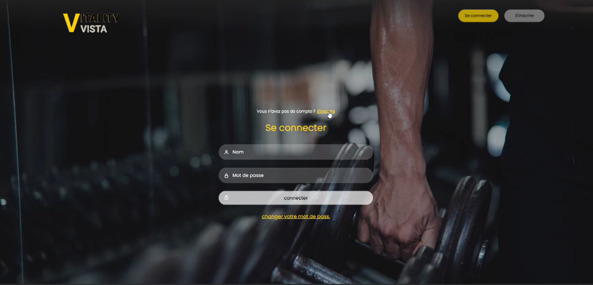
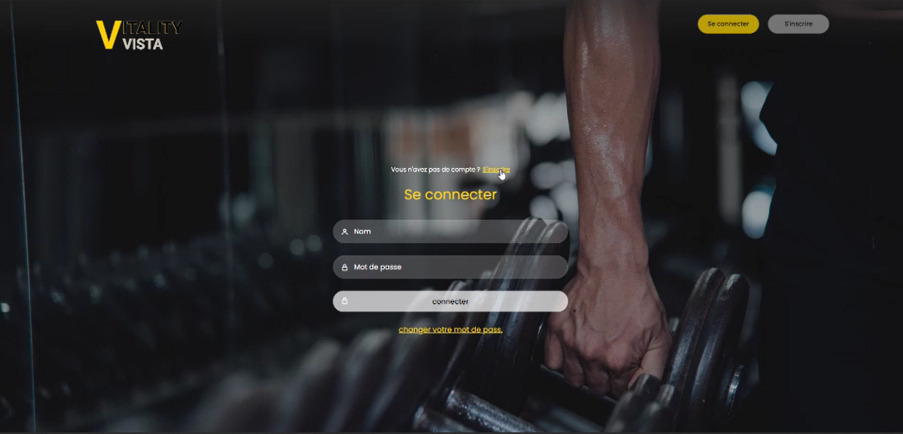

Mes Projets
VitalityVista üèãÔ∏è‚Äç‚ôÇÔ∏è
PFA (3ème année) : plateforme de gestion d’un complexe sportif.
Mon rôle : Développement en PHP & SQL
Équipe : Java, C++ (intégration multi-technologies)

 

Tourism App üåç
Application mobile pour touristes : recherche de monuments, restaurants, cafés, hôtels + QR code pour gagner des points, classement des matchs, espace admin.
Technologies : .NET MAUI, Firebase, Cloudinary, GitHub


Reservation Stades ⚽
Application web JEE : les utilisateurs peuvent réserver un stade pour jouer. Si le stade est occupé, la réservation est bloquée.
Technologies : Java JEE, SQL


Projet DevOps / Symfony ⚙️
Projet intégrant des pratiques DevOps avec Symfony. Mise en place d’une CI/CD complète et supervision de l’application.
Technologies : Symfony, Jenkins, Docker, Grafana, Prometheus, Nginx, SQL Server, Ansible